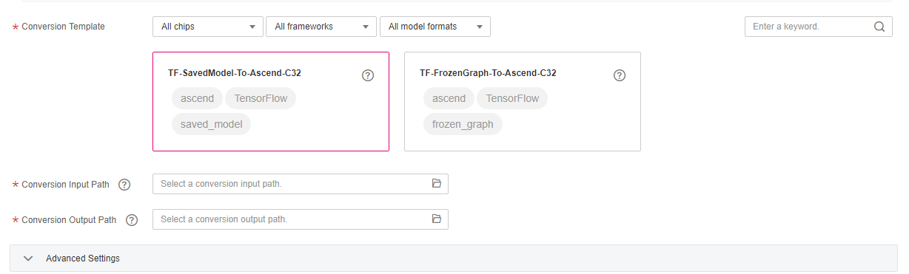

To obtain higher computing power, you can deploy the models created on ModelArts or a local PC on the Ascend chip. In this case, you need to compress or convert the models to the required formats before deploying them.
ModelArts supports model conversion, allowing you to convert a model to a required format before deploying the model on a chip with higher computing power and performance.
Model conversion applies to the following scenarios:
- If you use the TensorFlow framework (in frozen_graph or saved_model format) to train a model, you can convert the model to the .om format. The converted model can be deployed and run on Ascend chips.
Constraints
- Only Ascend chips are supported for model conversion.
- Only TensorFlow models can be converted. For a TensorFlow model, the input data type is of the INT32, BOOL, UINT8, or FLOAT type.
- ModelArts provides conversion templates for you to choose. For details about the supported templates, see Conversion Templates.
- The .tflite and TensorRT formats support fewer operators and quantization operators. Therefore, some models may fail to be converted. If the conversion fails, view the log dialog box or check error logs in the conversion output directory.
- An OBS directory must be specified in compression/conversion tasks. Ensure that the OBS directory you use and ModelArts are in the same region.
- When importing the converted model to ModelArts, you need to use the model template.
- For a TensorFlow model, the FrozenGraphDef and SavedModel formats are supported. If a model is in the SavedModel format, the model is converted to the FrozenGraphDef format and then to the OM format.
- Inputs with dynamic shapes are not supported, for example, NHWC = [?,?,?,3]. A fixed value needs to be specified during model conversion.
- The input can be up to 4-dimensional. Operators involving dimension changes (such as reshape and expanddim) cannot output five dimensions.
- Except the const operator, the input and output at all layers in a model must meet the condition dim!=0.
- Model conversion does not support models that contain training operators.
- A UINT8 quantized model cannot be converted.
- Model operators support only 2D convolution but do not support 3D convolution. The batch_normalization_1 and FusedBatchNorm operators cannot be converted in batches.
Creating a Model Compression/Conversion Task
- Log in to the ModelArts management console, and choose Model Management > Compression/Conversion in the left navigation pane. The Compression/Conversion page is displayed.
- Click Create Task in the upper left corner to create a task.
- On the Create Task page that is displayed, set the required parameters based on Table 1.
Table 1 Parameters Parameter
Description
Name
Name of a model conversion task
Description
Description of a model conversion task
Conversion Template
ModelArts provides various templates to define model conversion and the parameters required during the conversion.
Conversion Templates details the supported model conversion templates. You can select a template from the template list. Alternatively, you can enter a keyword in the search box to search for a template, or select a template based on the chip type, framework type, or model file format.
- Chip type: ModelArts conversion templates support Ascend chips.
- Framework type: The conversion templates generate models in different formats based on different frameworks. The TensorFlow framework is supported.
- Model file format: The supported model file formats are listed in the drop-down list. Select a format from the drop-down list. The frozen_graph and tf_serving formats are supported.
Conversion Input Path
Path to the model to be converted. The path must be an OBS path and comply with the ModelArts specifications. For details about the specifications, see Model Input Path Specifications.
Conversion Output Path
Path to the converted model. The path must comply with the ModelArts specifications. For details about the specifications, see Model Output Path Description.
Advanced Settings
ModelArts allows you to configure advanced settings for different conversion templates, for example, the precision.
Different conversion templates support different advanced settings. For details about the parameters supported by each template, see Conversion Templates.
Figure 1 Creating a model compression/conversion task
 - After entering the task information, click Create Now in the lower right corner.
After the task is created, the system automatically switches to the Compression/Conversion page. The created conversion task is displayed on the page and is in the Initializing status. The conversion task takes several minutes to complete. When the task status changes to Successful, the task is complete and the model has been converted.
If the task status changes to Failed, click the task name to go to the task details page, view the log information, adjust task parameters based on the log information, and create another conversion task.
Deleting a Model Compression/Conversion Task
You can delete unnecessary conversion tasks. However, tasks in the Running or Initializing status cannot be deleted.

Deleted tasks cannot be recovered. Exercise caution when performing this operation.